REPARACIÓN DE LA UNIDAD


Desmontaje de los componentes principales
Herramientas necesarias
Mazo de deslizamiento J-6125-B
Extractor de cojinetes J-22888-20-A con patas del extractor J-22888-35
Extractor de la quinta velocidad KM-553-A
Retén del anillo elástico J-36633
Base KM-113-2
Extractor de barras de selección J-42469
Útil de sujeción KM-552
procedimiento de desmontaje (desarmado, desensamble, desensamblaje)
- Desmonte la caja de cambios del vehículo. Consulte el apartado "Conjunto de la caja de cambios" de esta sección.
- Quite el tapón de llenado de la tapa.
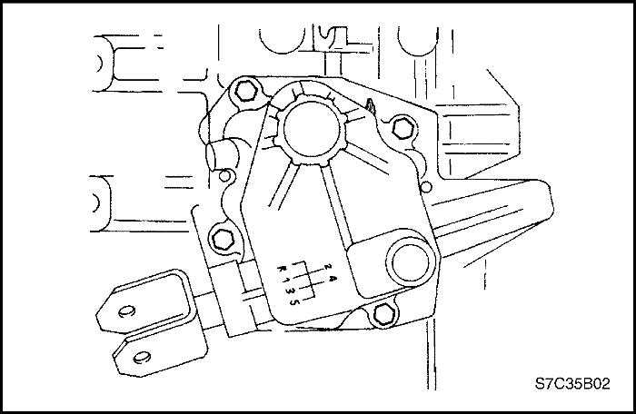
- Quite los tornillos de la tapa de la palanca de cambio.

- Desmonte la tapa de la palanca de cambio.
- Desmonte la junta de la tapa del cambio de marchas.
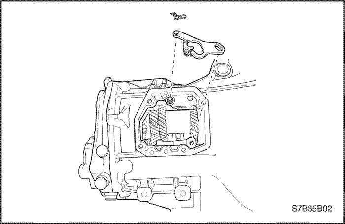
- Retire el clip de la palanca de marcha atrás.
- Desmonte la palanca de marcha atrás.
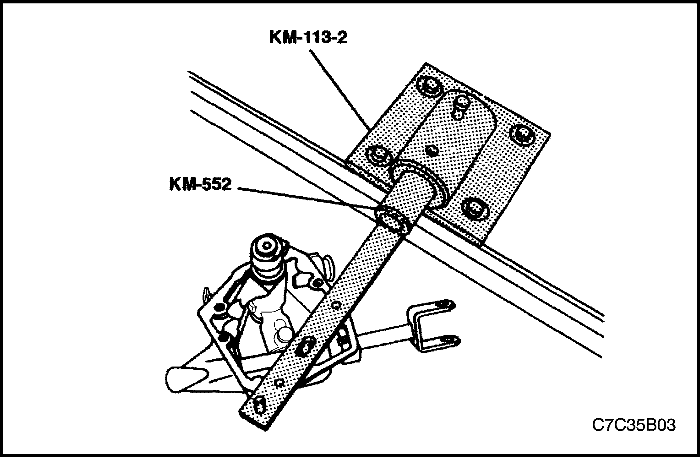
- Sujete, mediante tornillos, la tapa de la palanca de cambio al útil de sujeción KM-552.
- Coloque el útil de sujeción KM-552 sobre la base KM-113-2.
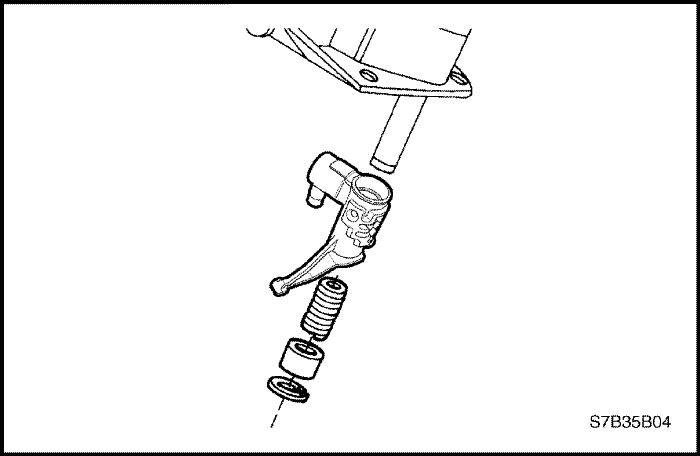
- Desmonte el anillo elástico, el casquillo, el muelle y la palanca intermedia.
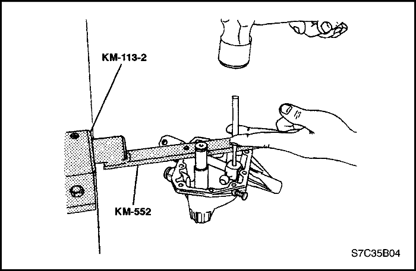
- Desmonte el pasador de la palanca del dedo del cambio.
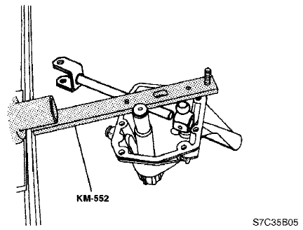
- Desmonte la barra de selección y la palanca del dedo del cambio.

- Quite el tornillo y desmonte el engranaje conducido del velocímetro del alojamiento de la caja de cambios.

- Quite los tornillos de la tapa de la caja de cambios.

- Desmonte la tapa de la caja de cambios.

- Coloque la palanca de cambio en segunda.
- Quite los tornillos de la placa de apoyo.

- Desmonte la placa de apoyo de la carcasa sin separar los ejes.

- Seleccione la marcha atrás (R).
- Sujete, mediante tornillos, la placa de apoyo al útil de sujeción KM-552 y monte este dispositivo en la base KM-113-2.

- Quite los tornillos y desmonte la horquilla de quinta de la placa de apoyo.

- Desmonte el anillo elástico del conjunto conducido de la quinta velocidad del eje principal.

- Desmonte el manguito del sincronizador del piñón conducido de quinta y el propio engranaje del sincronizador con el extractor de cojinetes J-22888-20-A con patas del extractor J-22888-35.

- Desmonte el conjunto del piñón de quinta conducido del eje principal.

- Desmonte el anillo del sincronizador de latón.

- Desmonte la jaula de agujas, el anillo elástico de retención y las arandelas de empuje.

- Desmonte el anillo elástico del piñón conductor de quinta del eje primario.

- Desmonte el piñón conductor de quinta del eje primario con el extractor del piñón de quinta KM-553-A.

- Desmonte los tornillos y el conector del selector de quinta de la placa de apoyo utilizando el extractor.

- Desmonte los cuatro tapones de la barra de selección con el extractor de barras de selección J-42469 y el mazo de deslizamiento J-6125-B.

- Quite del orificio del tapón pequeño el muelle y el pasador de seguridad de la barra.
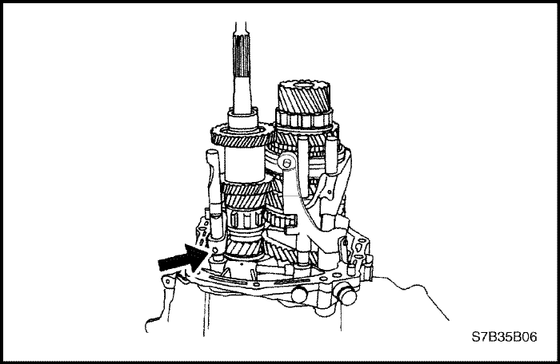
- Desmonte el pasador del conjunto de la horquilla/barra de selección de la marcha atrás.
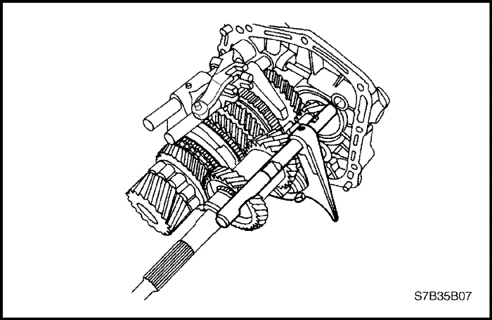
- Desmonte de la placa de apoyo el conjunto de la horquilla/barra de selección de marcha atrás.

- Quite los tornillos del soporte de apoyo.
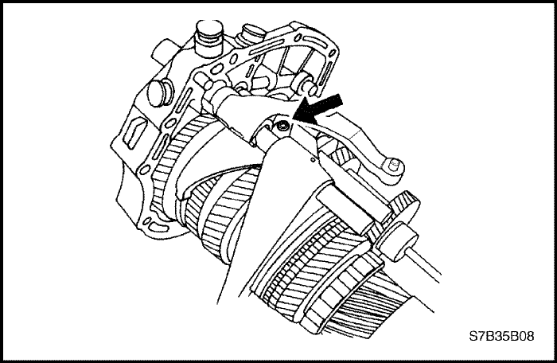
- Desmonte el pasador de retención de la horquilla de selección de primera-segunda.
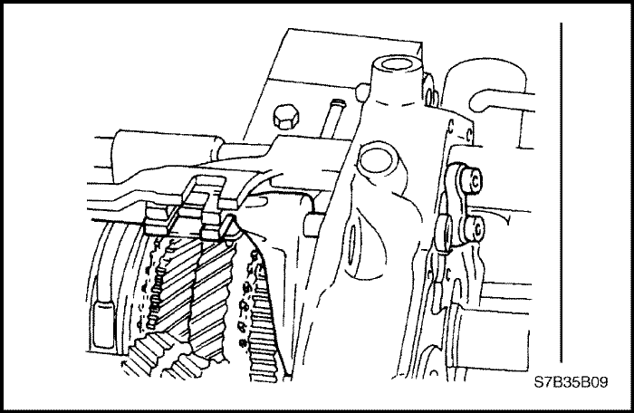
- Extraiga la barra de selección de primera-segunda hasta que se libere de la placa de apoyo.

- Desmonte el soporte de la placa de apoyo.

- Desmonte el pasador de retención de la horquilla de selección de tercera-cuarta y la barra de selección de tercera-cuarta.
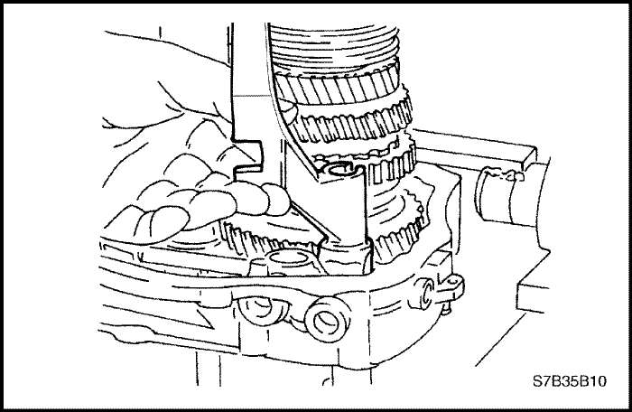
- Desmonte la palanca de cambio de quinta de la placa de apoyo.

- Desmonte la barra de selección de primera-segunda.

- Comprima el anillo elástico que sujeta el eje principal y fíjelo con el retén del anillo elástico J-36633.

- Mantenga el anillo elástico abierto en la base del eje primario con los alicates para anillos elásticos.
- Desmonte el conjunto del eje principal y el conjunto del eje primario de la placa de apoyo.

Eje primario y conjunto de engranajes
Herramientas necesarias
Extractor universal de cojinetes J-22912-01
procedimiento de desmontaje (desarmado, desensamble, desensamblaje)
- Quite el tornillo de retención del extremo del eje primario.

- Desmonte el anillo elástico situado de la base del tren de engranajes.

- Ejerza presión sobre el eje primario desde el tren de engranajes de dicho eje utilizando el extractor universal de cojinetes J-22912-01.

- Desmonte el cojinete del tren de engranajes del eje primario con el extractor universal de cojinetes J-22912-01.

Procedimiento de montaje (armado, ensamblaje)
- Presione el cojinete para introducirlo en el tren de engranajes del eje primario.

- Presione el eje primario para introducirlo en el conjunto del tren de engranajes de dicho eje.
- Monte el anillo elástico en la base del tren de engranajes.
- Coloque el tornillo de retención en el extremo del eje primario.
Apretar
Apriete el tornillo de retención del eje primario hasta 15 N•m (11 lb-pie).

Eje principal
Herramientas necesarias
Extractor universal de cojinetes J-22912-01
procedimiento de desmontaje (desarmado, desensamble, desensamblaje)
- Desmonte el cojinete del eje principal con el extractor universal de cojinetes J-22912-01.

- Desmonte el anillo elástico.

- Desmonte el piñón de primera, la jaula de agujas de primera velocidad de tipo plano y la placa de desgaste del eje principal.

- Desmonte el manguito del cubo del sincronizador que contiene el muelle del mismo.
- Desmonte el anillo de bloqueo exterior.

- Retire las chavetas del piñón del sincronizador de primera-segunda.

- Desmonte el cojinete de agujas del piñón de primera de tipo barril.

- Desmonte el anillo de retención y la arandela.

- Desmonte del eje principal el cubo del engranaje del sincronizador de primera-segunda.

- Desmonte el anillo de bloqueo del piñón del cambio de primera-segunda.

- Desmonte el piñón de segunda con el extractor universal de cojinetes J-22912-01.

- Desmonte el cojinete de agujas del piñón de segunda velocidad.

- Desmonte el anillo y la arandela de empuje.

- Desmonte el piñón de tercera y el anillo de bloqueo del sincronizador.

- Separe el anillo de bloqueo del sincronizador del piñón de tercera.

- Desmonte del eje principal el cojinete de agujas del piñón de tercera velocidad.

- Desmonte el manguito del sincronizador que contiene las chavetas y el muelle.

- Desmonte del eje principal el anillo de retención y la arandela de empuje.

- Desmonte el engranaje del sincronizador de tercera-cuarta que contiene el muelle de dicho sincronizador.

- Desmonte el conjunto de la cuarta velocidad.

- Separe el anillo de bloqueo del sincronizador del piñón de cuarta.

- Desmonte la jaula de agujas de cuarta, el anillo y la arandela de empuje.

- Desmonte el cojinete del eje principal.
Procedimiento de montaje (armado, ensamblaje)
- Monte el cojinete del eje principal.
- Monte el anillo, la arandela de empuje y la jaula de agujas de cuarta.
- Acople el anillo de bloqueo del sincronizador al piñón de cuarta.
- Monte el conjunto del piñón de cuarta.
- Monte el sincronizador de tercera-cuarta que contiene el muelle de dicho sincronizador.
- Monte el anillo de retención y la arandela de empuje en el eje principal.
- Monte el manguito del sincronizador que contiene las chavetas y el muelle.
- Monte la jaula de agujas del piñón de tercera.
- Acople el anillo de bloqueo del sincronizador al piñón de tercera.
- Monte el conjunto del piñón de tercera.
- Monte la arandela de empuje y el anillo.
- Monte la jaula de agujas del piñón de segunda.

- Monte el piñón de segunda.
- Monte el anillo de bloqueo del piñón del cambio de primera-segunda.
- Monte el engranaje del sincronizador de primera-segunda.
- Monte la arandela y el anillo elástico.
- Monte la jaula de agujas del piñón de primera.
- Coloque las chavetas en el engranaje del sincronizador de primera-segunda.
- Monte el manguito del cubo del sincronizador que contiene el muelle del sincronizador.
- Monte el anillo de bloqueo exterior.
- Monte la placa de desgaste del eje principal, la jaula de agujas de primera velocidad de tipo plano y el piñón de primera.
- Monte el anillo elástico.

- Presione sobre el cojinete del eje principal.
 |
|
 |
|
| © Copyright Chevrolet Europe. Reservados todos los derechos |